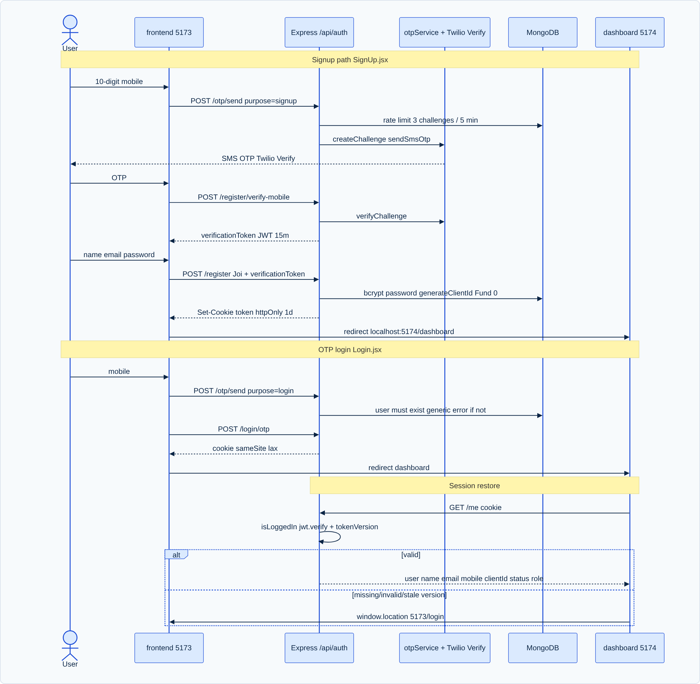

Authentication is architected as a hybrid password and phone-based OTP system designed to mirror the multi-factor security expectations of modern Indian financial brokerages. The system uses signed JSON Web Tokens (JWT) transmitted via secure, HTTP-only cookies, paired with an active database-backed tokenVersion check that supports instant global session invalidation.

To prevent phone number spoofing and unauthorized account creation, mobile onboarding uses a multi-step challenge verification flow:
POST /api/auth/otp/send):
/^\d{10}$/.OtpChallengeModel to ensure no more than 3 challenges were requested in the last 5 minutes. If exceeded, returns HTTP 429.isConsumed: true).123456) to ensure uninterrupted development and testing.POST /api/auth/register/verify-mobile):
123456).isConsumed: true.jwt.sign({ mobile, verified: true, challengeId }, JWT_SECRET, { expiresIn: '15m' }).
Once verified, the user submits registration details (POST /api/auth/register):
verificationToken.decoded.mobile === req.body.mobile and decoded.verified === true.challenge.usedForRegistration === false), then marks it used.ZR9669) using random alphanumeric character generation and collision detection.bcryptjs using 10 salt rounds.Funds document for the new user with ₹1,00,000 initial virtual capital.WatchlistList titled "Watchlist 1" populated with blue-chip Indian equities (Reliance, TCS, Infosys, HDFC Bank, ICICI Bank, SBI, ITC, Bharti Airtel).A frequent security flaw in stateless JWT architectures is the inability to revoke tokens before their expiration window elapses. Zerodha Clone solves this using Token Versioning:
// JWT Payload structure:
{
"userId": "68c123456789abcdef123455",
"role": "trader",
"tokenVersion": 3,
"iat": 1791780813,
"exp": 1792385613
}
When a user invokes POST /api/auth/logout-other-sessions or changes their password:
User.findByIdAndUpdate(userId, { $inc: { tokenVersion: 1 } }).tokenVersion fails the check in isLoggedInMiddleware.js:
if (user.tokenVersion !== decoded.tokenVersion) {
return res.status(401).json({
success: false,
message: "Session expired. Please login again."
});
}
| Cookie Attribute | Configuration | Security Protection Provided |
|---|---|---|
httpOnly |
true |
Prevents client-side JavaScript from accessing document.cookie, completely mitigating Cross-Site Scripting (XSS) token theft. |
sameSite |
'lax' |
Protects against Cross-Site Request Forgery (CSRF) by preventing third-party origins from sending the authentication cookie during cross-site requests. |
maxAge |
24 * 60 * 60 * 1000 (1 day) |
Enforces session lifecycle boundaries, ensuring stale sessions expire naturally. |
secure |
Conditional (false in dev, true in HTTPS prod) | Ensures authentication cookies are transmitted exclusively over encrypted TLS connections in production. |